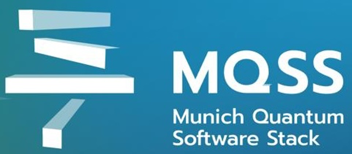

- Generated by
 1.12.0
1.12.0
|  |
QDMI v1.0.0b1
Quantum Device Management Interface
|
Ready to contribute to QDMI? This guide will help you get started.
Clone your fork locally
Change into the project directory
Create a branch for local development
Now you can make your changes locally.
(Optional, highly recommended) Install pre-commit to automatically run a set of checks before each commit.
via uv The easiest way to install pre-commit is via uv.
via brew If you use macOS, then pre-commit is in Homebrew, use
via pipx If you prefer to use pipx, you can install pre-commit with
via pip If you prefer to use regular pip (preferably in a virtual environment), you can install pre-commit with
Afterwards, you can install the pre-commit hooks with
Building the project requires a C compiler supporting C11 and a minimum CMake version of 3.19. The example devices and the tests require a C++ compiler supporting C++17.
QDMI uses CMake as its build system. Building a project using CMake is a two-step process:
First, the project needs to be configured by calling
This tells CMake to generate the build system in the build directory for a release build.
After the configuration, the project can be built by calling
We use the GoogleTest framework for unit testing of the QDMI interface. All tests are contained in the test directory. After building the project (as described above), the C++ unit tests can be conveniently executed by running
from the main project directory.
This project mostly follows the LLVM Coding Standard, which is a set of guidelines for writing C/C++ code. To ensure the quality of the code and that it conforms to these guidelines, we use
Common IDEs like Visual Studio Code or CLion have plugins that can automatically run clang-tidy on the code and automatically format it with clang-format.
.clang-tidy and .clang-format files in the project root directory.They will automatically execute clang-tidy on your code and highlight any issues. In many cases, they also provide quick-fixes for these issues. Furthermore, they provide a command to automatically format your code according to the given style.
clang-tidy <FILE> -- -I <PATH_TO_INCLUDE_DIRECTORY> where <FILE> is the file you want to analyze and <PATH_TO_INCLUDE_DIRECTORY> is the path to the include directory of the project.For the information to be displayed correctly in the documentation, it is essential that the comments follow the format required by Doxygen. Below you find some tags, that are commonly used within the documentation of a function:
@brief For a brief, one-line description of the function. Should always be provided.@details For a longer, detailed description of the function.@param To explain the usage of a parameter. Should be provided for each parameter.@return To explain the return value. Should be provided if the function returns a value.The documentation is generated using Doxygen, which is seamlessly integrated into the CMake build system.
The documentation can be built with the CMake target qdmi_docs via
The generated webpage can be inspected by opening the file in docs/html/index.html in the CMake build directory.
The generated webpage also contains four static sites, namely the main page, the support page, the FAQ page, and this development guide. The respective markdown files that serve as the source for those sites are contained in docs/ where index.md contains the content of the main page.
In order to include source files to be listed among the menu item API Reference/Files, these files must be marked as documented. This is accomplished by adding a comment like the following to the top of the file. Right now, this is done for all files in the include directory.
/** @file * @brief Include all public headers for the QDMI client. * @details The detailed description of the interface is provided in * @ref client/control.h and @ref client/query.h. */